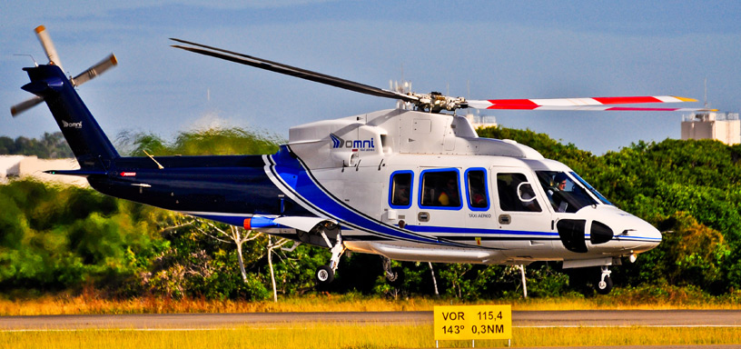

Sikorsky S-76
O Sikorsky S-76 é um helicóptero utilitário comercial de médio porte, fabricado pela Sikorsky Aircraft, com motores gêmeos turboshaft e trem de pouso retrátil. É conhecido por sua confiabilidade e segurança, sendo usado em diversas aplicações como transporte executivo, operações offshore, serviços aeromédicos e apoio a autoridades. Diferentes versões foram desenvolvidas ao longo das décadas, como o S-76C++ e o S-76D, que incluem melhorias em aviônicos e motores.
Principal
História
Galeria